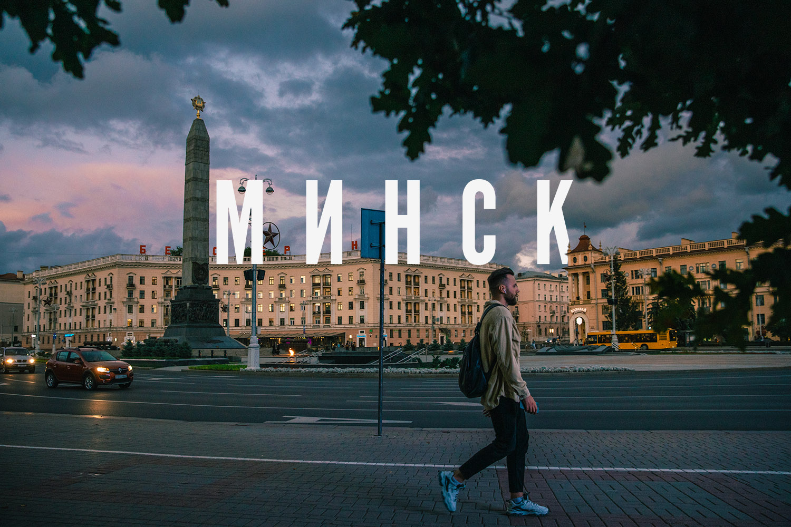

Минск – столица Беларуси
Город Минск – столица Беларуси, политический, экономический, научный и культурный центр страны.
Минск - один из старейших городов Европы. Первое письменное упоминание о будущей столице Республики Беларусь датируется 1067 годом. В то время объединившиеся внуки Рогнеды, сыновья Ярослава Мудрого - киевские князья Изяслав, Святослав и Всеволод Ярославичи - с войском явились под город Менеск в отместку за поход полоцкого князя Всеслава Брячиславича на Псков в 1065 году. Они овладели городом-крепостью Менеском и разбили войска Всеслава в памятной битве на Немиге, описанной в "Слове о полку Игореве"
Минск – наиболее экономически развитый город Беларуси. В Минске проживает 1 млн 995,5 тыс. человек (на 1 января 2023 г.), и численность населения постоянно увеличивается.

Географическое положение
Крупнейший город страны располагается на юго-восточных склонах Минской возвышенности. Площадь столицы Беларуси - 353,6 кв.км.
Географические координаты Минска: широта - 53°53′59″, долгота - 27°34′00″.
Высота над уровнем моря - 222 м.
Рельеф Минска разнообразен: характеризуется значительной холмистостью, перепад отметок в черте города составляет около 100 м.
Белорусскую столицу можно назвать не только административным, экономическим, научным и культурным, но и территориальным центром страны - всего в 70 км от нее находится географический центр Беларуси.
Административно-территориальное деление
Минск делится на 9 районов:- Центральный
- Советский
- Первомайский
- Партизанский
- Заводской
- Ленинский
- Октябрьский
- Московский
- Фрунзенский
Население
В Минске на 1 января 2022 года проживало 1 996 553 человека - 21,6% от общей численности населения страны.
Промышленность Минска
Минск – крупный промышленный центр. В городе выпускается около 16% от республиканского объема промышленной продукции.
- пищевая
- легкая
- автомобилестроение
- тракторостроение
- станкостроение
- металлообработка
- приборостроение
- производство радиотехнической и электронной аппаратуры
Образование в Минске
Минск – крупнейший образовательный центр республики. Здесь сосредоточены основные учебные заведения страны, в т.ч. лицеи, колледжи, вузы, крупнейшие из которых:
- Академия управления при Президенте Республики Беларусь
- Белорусский государственный университет
- Белорусский государственный медицинский университет
- Белорусский государственный экономический университет
- Белорусский национальный технический университет
- Белорусский государственный технологический университет
- Белорусская государственная академия искусств

Культура и спорт в Минске
В столице создана обширная сеть учреждений культуры, включающая 13 музеев и 10 театров, в т.ч.:
- Национальный художественный музей Республики Беларусь
- Национальный музей истории и культуры Беларуси
- Национальный академический Большой театр оперы и балета Беларуси
- Белорусский государственный музей Великой Отечественной войны
- Белорусский государственный музыкальный театр
- Белорусский государственный театр кукол
В Минске находится около 3600 спортивных объектов, среди которых стадионы и спортивные площадки, бассейны, спорткомплексы и тренажерные теннисные корты, лыжно-роллерная трасса.

Крупнейшие спортивные сооружения Минска:
- стадион "Динамо"
- Дворец спорта
- Дворец тенниса
- Футбольный манеж
- Ледовый дворец
- спорткомплекс "Минск-Арена"
- спорткомплекс "Чижовка-Арена"
- спортивно-оздоровительный комплекс "Фристайл"
Достопримечательности Минска
В Минске много интересных исторических мест и памятников архитектуры, в т.ч.:
- Троицкое предместье
- площадь Победы
- проспект Независимости
- церкви и костелы
- Национальная библиотека Беларуси